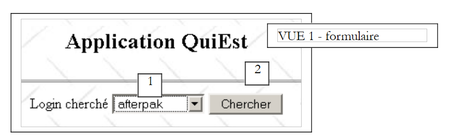
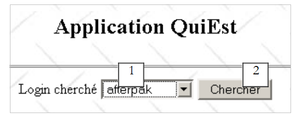
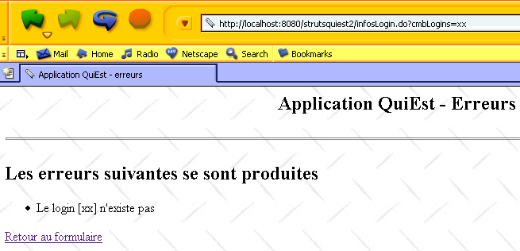
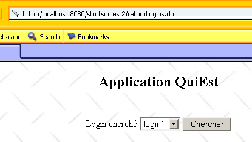
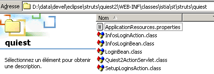

7. QuiEst 应用程序
本文将介绍一个比之前那些应用更复杂的Struts应用程序——之前的应用为了便于教学，都设计得比较简单。
7.1. users类
我们有一个Java类，用于存储Unix系统中用户的相关信息。这些信息被记录在三个特定文件中：
- /etc/passwd：用户列表
- /etc/group：用户组列表
- /etc/aliases：邮件别名列表
这三个文件的内容如下：
- /etc/passwd
该文件中的行格式如下：
login:pwd:uid:gid:id:dir:shell
其中
用户登录名 | |
其加密密码 | |
用户编号 | |
其组号 | |
其身份 | |
其连接目录 | |
其命令解释器 |
因此，用户的配置行可能如下所示：
前一个用户的编号为 110，属于组 57。组 57 的定义可在文件 /etc/group 中找到。
- /etc/group
该文件中的行格式如下：
nomGroupe:pwd:gid:membre1,membre2,....
其中
组名 | |
其加密密码——通常此字段为空 | |
组编号 | |
用户登录名——该字段可能为空 |
因此，前述第57组的行可能如下所示：
这表明第 57 组名为 iup2-auto。
- /etc/aliases
该文件中的行格式如下：
其中
别名 | |
一个或多个制表符 | |
别名所属用户的登录名 |
因此，该行
guillaume.dupond: dupond
意味着别名 guillaume.dupond 属于登录用户 dupond。 需要提醒的是，别名用于电子邮件地址中。因此，如果在上例中，Unix 机器名为 shiva.istia.univ-angers.fr，那么一封寄给 guillaume.dupond@shiva.istia.univ-angers.fr 的邮件，将投递到该机器上登录用户 dupond 的邮箱中。
本文不会详细探讨 users 类的完整接口，仅关注其构造函数及部分方法：
import java.io.*;
import java.util.*;
public class users{
// 属性
private Hashtable usersByLogin=new Hashtable(); // 登录 --> 用户名、密码、...、目录
private ArrayList erreurs=new ArrayList(); // 错误消息列表
....
// 构造函数
public users(String usersFileName, String groupsFileName, String aliasesFileName) throws Exception {
// usersFileName：用户文件名，其中包含以下格式的行
// 登录名:密码:用户ID:组ID:ID:目录:shell
// groupsFileName：包含以下格式行组的文件名
// 名称:密码:编号:成员1,成员2,..
// aliasesFileName：别名文件名，其中行格式为
// 别名:[tab]登录名
// 构建词典 usersByLogin
....
}// 生成器
// 用户列表
public Hashtable getUsersByLogin(){
return usersByLogin;
}
// 错误
public ArrayList getErreurs(){
return erreurs;
}
字典（哈希表），其键为 passwd 文件中的登录名。与键关联的值是一个字符串数组（String [7]），其元素为 passwd 文件中与该登录名关联的行中的 7 个字段。如果该行少于 7 个字段，某些字段可能为空。 | |
错误消息列表——若无错误则为空 |
7.2. 该Web应用程序
我们计划构建以下Web应用程序（表单页面）：
 |
编号 | 名称 | 类型HTML | 角色 |
1 | cmbLogins | <select ...>...</select> | 列出了所有可查询信息的登录账号 |
2 | btnChercher | <input type="submit" ...> | 用于启动搜索 |
当用户点击按钮 [Chercher] (2) 时，系统会向类型为 users 的 U 对象查询 (1) 中的登录信息。如果该登录信息存在，将返回以下响应（信息页面）：
 |
如上文浏览器中的 URL 所示，表单参数通过 GET 发送至服务器。 因此，我们可以直接向浏览器提供这个已配置的 URL。这就是我们在此处所做的，用于引入一个不存在的登录名。我们将得到以下响应（错误页面）：
 |
7.3. 应用程序架构
 |
在此架构中，我们发现以下组件：
- 视图：
- logins.jsp，用于显示登录列表（视图 1）
- infos.jsp，用于显示与登录相关的信息（视图 2）
- erreurs.jsp，用于显示错误列表（视图 3）
- 由以下操作使用的 ActionForm 类型表单：
- formLogins 用于收集表单 logins.jsp 的数据
- 操作：
- SetupLoginAction 用于准备 formulaire.jsp 的内容，然后显示该视图
- InfosLoginAction：在内容发送至服务器后处理 logins.jsp 的内容
- ForwardAction：处理视图 infos.jsp 和 erreurs.jsp 中的链接 [Retour vers le formulaire]
- 业务类 users，供操作获取数据时使用
- 由三个平面文件 passwd、group 和 aliases 提供的模型
7.4. Web 应用程序的配置文件
7.4.1. 文件 server.xml
应用程序上下文将命名为 /strutsquiest2。因此，需在 Tomcat 的 server.xml 文件中添加以下行：
完成上述操作后，可能需要重启 Tomcat 以便其识别新上下文。可通过访问 URL http://localhost:8080/strutsquiest2 来验证该上下文是否有效。
7.4.2. web.xml 配置文件
该应用程序的配置文件 web.xml 如下所示：
<?xml version="1.0" encoding="UTF-8"?>
<!DOCTYPE web-app PUBLIC "-//Sun Microsystems, Inc.//DTD Web Application 2.2//EN" "http://java.sun.com/j2ee/dtds/web-app_2_2.dtd">
<web-app>
<servlet>
<servlet-name>strutsquiest2</servlet-name>
<servlet-class>istia.st.struts.quiest.Quiest2ActionServlet</servlet-class>
<init-param>
<param-name>config</param-name>
<param-value>/WEB-INF/struts-config.xml</param-value>
</init-param>
<init-param>
<param-name>passwdFileName</param-name>
<param-value>data/passwd</param-value>
</init-param>
<init-param>
<param-name>groupFileName</param-name>
<param-value>data/group</param-value>
</init-param>
</servlet>
<servlet-mapping>
<servlet-name>strutsquiest2</servlet-name>
<url-pattern>*.do</url-pattern>
</servlet-mapping>
</web-app>
该文件 web.xml 带来了一项新变化。Struts 控制器不再是 org.apache.struts.action.ActionServlet，而是一个派生类，我们在此将其命名为 istia.st.struts.quiest.Quiest2ActionServlet。 这将使我们能够获取两个初始化参数：passwdFileName（passwd 文件的位置）和 groupFileName（group 文件的位置）。aliases 文件在此应用程序中没有用处。
7.4.3. 文件 struts-config.xml
struts-config.xml 文件内容如下：
<?xml version="1.0" encoding="ISO-8859-1" ?>
<!DOCTYPE struts-config PUBLIC
"-//Apache Software Foundation//DTD Struts Configuration 1.1//EN"
"http://jakarta.apache.org/struts/dtds/struts-config_1_1.dtd">
<struts-config>
<form-beans>
<form-bean name="formLogins" type="org.apache.struts.action.DynaActionForm">
<form-property name="cmbLogins" type="java.lang.String" initial=""/>
<form-property name="tLogins" type="java.lang.String[]"/>
</form-bean>
</form-beans>
<action-mappings>
<action
path="/init"
name="formLogins"
validate="false"
scope="session"
type="istia.st.struts.quiest.SetupLoginsAction"
>
<forward name="afficherLogins" path="/vues/logins.jsp"/>
<forward name="afficherErreurs" path="/vues/erreurs.jsp"/>
</action>
<action
path="/infosLogin"
name="formLogins"
validate="false"
scope="session"
type="istia.st.struts.quiest.InfosLoginAction"
>
<forward name="afficherErreurs" path="/vues/erreurs.jsp"/>
<forward name="afficherInfos" path="/vues/infos.jsp"/>
</action>
<action
path="/retourLogins"
parameter="/vues/logins.jsp"
type="org.apache.struts.actions.ForwardAction"
/>
</action-mappings>
<message-resources
parameter="istia.st.struts.quiest.ApplicationResources"
null="false"
/>
</struts-config>
其中包含三个主要部分：
- <form-beans> 部分中的表单声明
- <action-mappings> 部分中的操作声明
- 在 <message-resources> 中声明资源文件
7.4.4. 应用程序中的表单对象（Beans）
<form-beans>
<form-bean name="formLogins" type="org.apache.struts.action.DynaActionForm">
<form-property name="cmbLogins" type="java.lang.String" initial=""/>
<form-property name="tLogins" type="java.lang.String[]"/>
</form-bean>
</form-beans>
我们的应用程序中只有一个表单 Bean，名为 formLogins，其类型继承自 DynaActionForm。它将在以下情况下使用：
- 包含显示视图 1 所需的数据
- 在用户提交（submit）第 1 号视图表单时，获取表单中的值
formLogins Bean 的结构与视图 1 的表单相关联。让我们来研究一下：
 |
编号 | 名称 | 类型 HTML | 角色 |
1 | cmbLogins | <select ...>...</select> | 列出了所有可查询信息的登录账号 |
2 | btnChercher | <input type="submit" ...> | 用于启动搜索 |
我们区分以下几种情况：
- 从客户端到服务器时，对象 formLogins 用于存储上述表单 HTML 的值，该表单将通过按钮 [Envoyer] 提交。 因此，它需要一个字段 cmbLogins 来接收字段 HTML、cmbLogins、c.a.d 的值，即用户选择的登录名。
- 从服务器到客户端，对象 formLogins 用于提供视图 1 的初始内容。其字段 tLogins 将作为列表 1 的内容。 其字段 cmbLogins 将用于确定列表 1 中待选中的项目。
7.4.5. 应用程序的操作
操作由 Action 类型或其派生对象实现。操作的配置在 <action-mappings> 标签内进行：
<action-mappings>
<action
path="/init"
name="formLogins"
validate="false"
scope="session"
type="istia.st.struts.quiest.SetupLoginsAction"
>
<forward name="afficherLogins" path="/vues/logins.jsp"/>
<forward name="afficherErreurs" path="/vues/erreurs.jsp"/>
</action>
<action
path="/infosLogin"
name="formLogins"
validate="false"
scope="session"
type="istia.st.struts.quiest.InfosLoginAction"
>
<forward name="afficherErreurs" path="/vues/erreurs.jsp"/>
<forward name="afficherInfos" path="/vues/infos.jsp"/>
</action>
<action
path="/retourLogins"
parameter="/vues/logins.jsp"
type="org.apache.struts.actions.ForwardAction"
/>
</action-mappings>
/init 操作
<action
path="/init"
name="formLogins"
validate="false"
scope="session"
type="istia.st.struts.quiest.SetupLoginsAction"
>
<forward name="afficherLogins" path="/vues/logins.jsp"/>
<forward name="afficherErreurs" path="/vues/erreurs.jsp"/>
</action>
下面我们来描述 /init 操作的工作原理：
- /init 操作通常仅在首次请求-响应循环中执行一次，此时用户请求 URL http://localhost:8080/strutsquiest2/init.do
- 对象 formsLogins 被创建或回收时，会根据 scope 属性的要求，将其从会话中检索（回收）或放入（创建）。
- 其 reset 方法被调用。需要注意的是，在 ActionForm 类及其派生类中，该方法默认不执行任何操作。它在将客户端请求数据复制到 ActionForm 对象之前被调用，用于在复制前清理该对象。 此处的客户端请求是什么？当请求的 URL 为 http://localhost:8080/strutsquiest2/init.do 时，将触发 /init 操作。 该 URL 对象可由 GET 或 POST 调用。 只需在该请求中加入名称与 formLogins 字段名称相同的参数，即可初始化这些字段，如下例所示：

- 该请求包含参数 cmbLogins（afterpak）。因此，Struts 控制器将该参数的值复制到了 formLogins 表中的 cmbLogins 字段中。 随后执行了 SetupLoginsAction 操作，并最终显示了 logins.jsp 视图。该视图包含一个表单，其中某些字段的值来自 formLogins。 因此，名为 cmbLogins 的下拉选择字段 HTML 从 formLogins 中的字段 cmbLogins（=afterpak）获取了其值。 这就是为什么登录名列表显示时，默认定位在登录名 afterpak 上。
- 我们还可以尝试以如下方式传递参数 tLogins：
这将导致 formLogins 的字段 tLogins 被初始化为数组 {"login1","login2"}。 不过，我们稍后将看到，操作 SetupLoginsAction 会为字段 tLogins 赋值，并将这样创建的数组替换为一个新数组。因此，在视图 logins.jsp 中显示的正是这个新数组。
- 前面的讨论虽然有些复杂，但其价值在于表明我们不能假设 /init 操作会在没有来自客户端的参数的情况下被触发。因此，使用 reset 方法来清空 formLogins 可能会很有用。 在这种情况下，我们需要派生类 DynaActionForm。但本文中我们并未这样做。
- 调用 formLogins 的 reset 方法后，控制器会将客户端请求中的数据复制到 formLogins 中同名的字段中。 通常，/init 操作是在不带客户端参数的情况下调用的，但我们之前已经说明，没有任何东西能阻止客户端使用任意参数调用 /init 操作。因此，在此阶段结束时，cmbLogins 和 tLogins 字段完全可能已赋值。 我们看到，字段 cmbLogins 会保留该值，但字段 tLogins 则不会。
- 随后控制器会检查该操作的 validate 属性。在此处，其值为“false”。因此不会调用 formLogins 的 validate 方法。因此我们无需编写该方法。
- 对象 SetupLoginsAction 会被创建，若已存在则会被回收，并调用其 execute 方法。其唯一作用是为 formLogins 的字段 tLogins 赋值。 该值为登录名数组，该数组将从业务类 users 中获取。此操作可能会失败。因此，/init 操作之后可能跟两个视图：
- 如果 users 类无法提供登录表，则显示视图 erreurs.jsp
- 否则显示视图 logins.jsp
- 控制器将显示上述两个视图中的一个
- /init 操作的请求-响应循环结束。
/infosLogin 操作
<action
path="/infosLogin"
name="formLogins"
validate="false"
scope="session"
type="istia.st.struts.quiest.InfosLoginAction"
>
<forward name="afficherErreurs" path="/vues/erreurs.jsp"/>
<forward name="afficherInfos" path="/vues/infos.jsp"/>
</action>
描述操作 / infosLogin 的工作原理：
- 当用户点击视图 logins.jsp 中的按钮 [Chercher] 时，通常会触发操作 /infosLogin。 此时会向服务器发送请求，该请求由视图中的 HTML <form> 标签确定：
<html:form name="formLogins" method="get" action="/infosLogin" type="org.apache.struts.action.DynaActionForm">
- 可见该请求是通过 GET 方法发送至服务器的。因此用户可以手动输入：

- 对象 formsLogins 被创建或回收。根据 scope 属性的要求，该对象会被取回（回收）或放入（创建）会话中。
- 在将客户端请求的数据复制到 ActionForm 对象之前，会调用其 reset 方法。 该方法通常采用http://localhost:8080/strutsquiest2/infosLogin.do?cmbLogins=xx的形式，其中xx是从登录名列表中选定的登录名。 但如果用户在调用前一个 URL 时传入了任意参数，该值也可能变成任意内容。考虑以下页面序列：

- 操作 /infosLogin 被调用时，传入的参数字符串为 cmbLogins=xx&tLogins=login1&tLogins=login2。 因此，formLogins 中的字段 cmbLogins 和 tLogins 将分别接收值 "xx" 和 {"login1","login2"}。 操作 /infosLogin 将向业务类 users 查询与登录名 "xx" 相关的信息。users 类将返回该登录名不存在。因此显示了上文中的视图。现在，我们使用上文中的链接 [Retour au formulaire]：

- 链接 [Retour au formulaire] 触发的正是操作 /retourLogins。该操作仅直接显示视图 logins.jsp，不进行任何中间操作。 需要提醒的是，字段 tLogins 用于为视图 logins.jsp 的登录名列表提供数据。由于用户已将该值修改为 {"login1","login2"}，因此列表中现在显示的就是这两个登录名。 再次强调，在应用程序的运行中，必须绝对考虑到用户或程序设置的任意参数的情况。解决此处提出的问题的方法是，让链接 [Retour au formulaire] 指向操作 /init。这样就能确保获得正确的登录名列表。
- 让我们回到针对操作 /infosLogin 的常规请求，例如：
http://localhost:8080/strutsquiest2/infosLogin.do?cmbLogins=afterpak
- Struts 控制器将为对象 ActionForm 的字段 cmbLogins 赋值。而字段 tLogins 则不会被赋值（因为发送的请求中没有对应的字段）。这种行为符合我们的预期。 因此，我们无需为 formLogins 编写自定义的 reset 方法。
- 一旦调用 formLogins 的 reset 方法，控制器会将客户端请求中的数据复制到 formLogins 中同名的字段中。 cmbLogins字段将接收一个值，即用户选择的登录名（afterpak）。
- 随后，控制器检查该操作的 validate 属性。此处其值为“false”。因此不会调用 formLogins 的 validate 方法。
- 对象 InfosLoginAction 被创建（若已存在则被回收），并调用其 execute 方法。其作用是获取与登录名 cmbLogins 相关的信息。这些信息将从业务类 users 中获取。此操作可能失败（例如登录名不存在）。 因此，操作 /infosLogin 之后可能包含两个视图：
- 若 users 类无法提供所需信息，则进入视图 erreurs.jsp
- 否则，将显示视图 infos.jsp
- 控制器将显示上述两个视图中的一个
- 操作 /infosLogin 的请求-响应循环已完成。
操作 /retourLogins
<action
path="/retourLogins"
parameter="/vues/logins.jsp"
type="org.apache.struts.actions.ForwardAction"
/>
- 操作 /retourLogins 由视图 erreurs.jsp 和 infos.jsp 中的链接 [Retour au formulaire] 激活而触发。
- 此处没有与该操作关联的表单。因此，系统会立即执行 ForwardAction 对象的 execute 方法，该方法将返回一个指向视图 /vues/logins.jsp 的 ActionForward 对象。
7.4.6. 应用程序的消息文件
文件 struts-config.xml 的第三部分是消息文件：
文件 ApplicationResources.properties 位于 WEB-INF/classes/istia/st/struts/quiest 目录下。其内容如下：
errors.header=<ul>
errors.footer=</ul>
parametreManquant=<li>Le paramètre [{0}] n'a pas été initialisé</li>
usersException=<li>Erreur d'initialisation de l'application : {0}</li>
loginInconnu=<li>Le login [{0}] n'existe pas</li>
7.5. 视图代码
如果读者不理解下面介绍的视图代码，请重新阅读关于表单管理的课程。
7.5.1. 视图 logins.jsp
需要提醒的是，该视图在以下两种情况下显示：
- 在第一个请求-响应循环中调用 /init 操作时
- 在后续请求-响应循环中调用 /retourLogins 操作时
视图 logins.jsp 的代码如下：
<%@ taglib uri="/WEB-INF/struts-html.tld" prefix="html" %>
<html>
<head>
<title>Quiest - formulaire</title>
</head>
<body background="<html:rewrite page="/images/standard.jpg"/>">
<center>
<h2>Application QuiEst</h2>
<hr>
<html:form name="formLogins" method="get" action="/infosLogin" type="org.apache.struts.action.DynaActionForm">
<table>
<tr>
<td>Login cherché</td>
<td>
<html:select name="formLogins" property="cmbLogins">
<html:options name="formLogins" property="tLogins"/>
</html:select>
</td>
<td>
<html:submit value="Chercher"/>
</td>
</tr>
</table>
</html:form>
</center>
</body>
</html>
7.5.2. 视图 infos.jsp
当成功调用操作 /infosLogin 时，将显示此视图。其代码如下：
<%@ taglib uri="/WEB-INF/struts-html.tld" prefix="html" %>
<%@ taglib uri="/WEB-INF/struts-bean.tld" prefix="bean" %>
<html>
<head>
<title><bean:write name="infosLoginBean" scope="request" property="titre"/></title>
</head>
<body background="<html:rewrite page="/images/standard.jpg"/>">
<h2><bean:write name="infosLoginBean" scope="request" property="titre"/></h2>
<hr>
<table border="1">
<tr>
<th>login</th><th>pwd</th><th>uid</th><th>gid</th><th>id</th><th>dir</th><th>shell</th>
</tr>
<tr>
<td><bean:write name="infosLoginBean" scope="request" property="infosLogin[0]"/></td>
<td><bean:write name="infosLoginBean" scope="request" property="infosLogin[1]"/></td>
<td><bean:write name="infosLoginBean" scope="request" property="infosLogin[2]"/></td>
<td><bean:write name="infosLoginBean" scope="request" property="infosLogin[3]"/></td>
<td><bean:write name="infosLoginBean" scope="request" property="infosLogin[4]"/></td>
<td><bean:write name="infosLoginBean" scope="request" property="infosLogin[5]"/></td>
<td><bean:write name="infosLoginBean" scope="request" property="infosLogin[6]"/></td>
</tr>
</table>
<br>
<html:link page="/retourLogins.do">
Retour au formulaire
</html:link>
</body>
</html>
此视图使用了一个名为 infosLoginBean 的对象，该对象由操作 /infosLogin 放入查询中。该对象有两个字段：
我们将在讲解类 InfosLoginAction 的代码时详细说明该类。
7.5.3. 视图 erreurs.jsp
当 /init 或 /infosLogin 操作因错误而终止时，将显示此视图。其代码如下：
<%@ taglib uri="/WEB-INF/struts-html.tld" prefix="html" %>
<html>
<head>
<title>Application QuiEst - erreurs</title>
</head>
<body background="<html:rewrite page="/images/standard.jpg"/>">
<h2 align="center">Application QuiEst - Erreurs</h2>
<hr>
<h2>Les erreurs suivantes se sont produites</h2>
<html:errors/>
<html:link page="/retourLogins.do">
Retour au formulaire
</html:link>
</body>
</html>
7.6. Java类
文件 web.xml 引用了一个 Java 类：
<web-app>
<servlet>
<servlet-name>strutsquiest2</servlet-name>
<servlet-class>istia.st.struts.quiest.Quiest2ActionServlet</servlet-class>
....
</servlet>
...
</web-app>
配置文件 struts-config.xml 引用了两个 Java 类：
<action
path="/infosLogin"
name="formLogins"
validate="false"
scope="session"
type="istia.st.struts.quiest.InfosLoginAction"
>
<forward name="afficherErreurs" path="/vues/erreurs.jsp"/>
<forward name="afficherInfos" path="/vues/infos.jsp"/>
</action>
<action
path="/init"
name="formLogins"
validate="false"
scope="session"
type="istia.st.struts.quiest.SetupLoginsAction"
>
<forward name="afficherLogins" path="/vues/logins.jsp"/>
<forward name="afficherErreurs" path="/vues/erreurs.jsp"/>
</action>
7.6.1. 类 Quiest2ActionServlet
类 Quiest2ActionServlet 继承自 Struts 控制器类 ActionServlet。 我们派生类 ActionServlet 来定制其 init 方法。实际上，该方法在 Servlet 初始加载时仅执行一次，将使我们能够构建一个 users 类型的业务对象。该对象实际上只需构建一次，而 init 方法是进行此构建的理想位置。 users对象的构建需要两个文件：passwd和group。这两个文件的位置作为参数通过应用程序中的web.xml文件传递给Servlet：
<servlet>
<servlet-name>strutsquiest2</servlet-name>
<servlet-class>istia.st.struts.quiest.Quiest2ActionServlet</servlet-class>
<init-param>
<param-name>config</param-name>
<param-value>/WEB-INF/struts-config.xml</param-value>
</init-param>
<init-param>
<param-name>passwdFileName</param-name>
<param-value>data/passwd</param-value>
</init-param>
<init-param>
<param-name>groupFileName</param-name>
<param-value>data/group</param-value>
</init-param>
</servlet>
Servlet 的代码如下：
package istia.st.struts.quiest;
import java.util.*;
import javax.servlet.*;
import org.apache.struts.action.*;
import istia.st.users.*;
public class Quiest2ActionServlet
extends ActionServlet {
// Servlet 属性
private users u = null;
private ActionErrors erreurs = new ActionErrors();
private String[] tLogins;
//init
public void init() throws ServletException {
// 切勿忘记初始化父类
super.init();
// 局部变量
final String[] initParams = {"passwdFileName", "groupFileName"};
Properties params = new Properties();
// 获取 Servlet 的初始化参数
ServletConfig config = getServletConfig();
String servletPath = config.getServletContext().getRealPath("/");
for (int i = 0; i < initParams.length; i++) {
String valeur = config.getInitParameter(initParams[i]);
if (valeur == null) {
erreurs.add(ActionErrors.GLOBAL_ERROR, new ActionError("parametreManquant", initParams[i]));
valeur = "";
}
// 存储参数
params.setProperty(initParams[i], valeur);
} //for
// 若初始化出现错误则返回
if (erreurs.size() != 0) {
return;
}
// 创建一个 users 对象
try {
u = new users(servletPath + "/" + params.getProperty("passwdFileName"),
servletPath + "/" + params.getProperty("groupFileName"), null);
}
catch (Exception ex) {
erreurs.add(ActionErrors.GLOBAL_ERROR, new ActionError("usersException", ex.getMessage()));
return;
} //catch
// 获取登录名列表
tLogins = new String[u.getUsersByLogin().size()];
Enumeration eLogins = u.getUsersByLogin().keys();
for (int i = 0; i < tLogins.length; i++) {
tLogins[i] = (String) eLogins.nextElement();
}
// 对登录名进行排序
Arrays.sort(tLogins);
} //初始化
// 访问Servlet私有信息的方法
public Object[] getInfos() {
return new Object[] {erreurs, u, tLogins};
}
}
简而言之，init方法的工作原理如下：
- 首先，调用父类（ActionServlet）的 init 方法，使其正确初始化
- 随后读取初始化参数。若参数缺失，则将私有属性 ActionErrors（错误）进行赋值。
- 如果初始化参数齐全，则构建一个 users 对象。此构建过程可能会抛出异常。在这种情况下，将填充属性 ActionErrors erreurs。
- 如果构造成功，则从创建的对象中提取所有登录名的列表，并将其排序后存入一个数组中，该数组被存入私有属性 String[] tLogins。
- 生成的 users 对象存储在私有属性 users u 中。
- 公共方法 getInfos 允许将三个私有属性（u、erreurs、tLogins）获取到一个对象数组中。
7.6.2. SetupLoginsAction 类
此操作旨在初始化对象 DynaActionForm formLogins。该对象被放置在会话中后，后续将无需再次初始化。 因此，操作 SetupLoginsAction 仅执行一次。其代码如下：
package istia.st.struts.quiest;
import java.io.*;
import javax.servlet.*;
import javax.servlet.http.*;
import org.apache.struts.action.*;
public class SetupLoginsAction
extends Action {
public ActionForward execute(ActionMapping mapping, ActionForm form,
HttpServletRequest request, HttpServletResponse response) throws IOException,ServletException {
// 准备要显示的表单
// 获取控制器Servlet的信息
// 信息=(ActionErrors 错误, 用户 u, String[] tLogins)
Object[] infos = ( (Quiest2ActionServlet)this.getServlet()).getInfos();
// 初始化过程中是否出现错误？
ActionErrors erreurs = (ActionErrors) infos[0];
if (!erreurs.isEmpty()) {
this.saveErrors(request, erreurs);
return mapping.findForward("afficherErreurs");
}
// 将登录信息放入表单
DynaActionForm formLogins=(DynaActionForm) form;
formLogins.set("tLogins",infos[2]);
return mapping.findForward("afficherLogins");
}
}
与所有 Struts 动作一样，代码位于 execute 方法中。该方法：
- 从 Struts 控制器中获取其通过 init 方法存储的信息。这是由 Action 类的 getServlet() 方法实现的。
- 其中包括控制器错误属性 ActionErrors。如果该错误列表不为空，则将其放入请求中，并请求显示视图 erreurs.jsp。
- 如果错误列表为空，则将控制器最初创建的登录列表赋值给 Bean formLogins 的字段 tLogins。随后请求显示视图 logins.jsp，该视图将显示登录列表。
7.6.3. 类 InfosLoginBean 和 InfosLoginAction
操作 InfosLoginAction 的目的是检索与用户所选登录名相关联的信息，并将其呈现给用户。这些信息将被汇总到一个类型为 InfosLoginBean 的对象中：
package istia.st.struts.quiest;
public class InfosLoginBean implements java.io.Serializable{
// Bean 包含信息页面所需的必要信息
private String titre;
private String[] infosLogin;
// 构造函数
public InfosLoginBean(String titre, String[] infosLogin){
this.titre=titre;
this.infosLogin=infosLogin;
}
// 获取器
public String getTitre(){
return this.titre;
}
public String[] getInfosLogin(){
return this.infosLogin;
}
public String getInfosLogin(int i){
return this.infosLogin[i];
}
}
前一个类是一个 Bean，即 c.a.d。这是一个 Java 类，其中私有属性 T unAttribut 会自动关联到两个私有方法：
- void setUnAttribut(T 值){unAttribut=值;}
- T getUnAttribut(){ return unAttribut;}
请注意 get 和 set 方法的特殊语法。如果属性是一个数组 T[] unAttribut，则可以为数组的元素创建 get 和 set 方法：
- void setUnAttribut(T 值, int i){unAttribut[i]=值;}
- T getUnAttribut(int i){ return unAttribut[i];}
为了更好地理解，让我们回顾一下视图 infos.jsp 的代码，该视图应在操作 InfosLoginAction 之后被调用：
<%@ taglib uri="/WEB-INF/struts-html.tld" prefix="html" %>
<%@ taglib uri="/WEB-INF/struts-bean.tld" prefix="bean" %>
<html>
<head>
<title><bean:write name="infosLoginBean" scope="request" property="titre"/></title>
</head>
<body background="<html:rewrite page="/images/standard.jpg"/>">
<h2><bean:write name="infosLoginBean" scope="request" property="titre"/></h2>
<hr>
<table border="1">
<tr>
<th>login</th><th>pwd</th><th>uid</th><th>gid</th><th>id</th><th>dir</th><th>shell</th>
</tr>
<tr>
<td><bean:write name="infosLoginBean" scope="request" property="infosLogin[0]"/></td>
<td><bean:write name="infosLoginBean" scope="request" property="infosLogin[1]"/></td>
<td><bean:write name="infosLoginBean" scope="request" property="infosLogin[2]"/></td>
<td><bean:write name="infosLoginBean" scope="request" property="infosLogin[3]"/></td>
<td><bean:write name="infosLoginBean" scope="request" property="infosLogin[4]"/></td>
<td><bean:write name="infosLoginBean" scope="request" property="infosLogin[5]"/></td>
<td><bean:write name="infosLoginBean" scope="request" property="infosLogin[6]"/></td>
</tr>
</table>
<br>
<html:link page="/retourLogins.do">
Retour au formulaire
</html:link>
</body>
</html>
我们来看以下标签：
该语句要求将对象 infosLoginBean（名称）的“标题”（property）字段值写入查询（scope）中。待写入的值将通过 request.getAttribute("infosLoginBean") 获取。getTitre()。因此，InfosLoginBean类中必须存在getTitre方法。确实如此。标签
要求将请求中包含的 infosLoginBean 对象的 infosLogin[0] 元素的值写入。 待写入的值将通过 request.getAttribute("infosLoginBean").getInfosLogin(0) 获取。 因此，InfosLoginBean 类中必须存在 getInfosLogin(int i) 方法。确实如此。
类 InfosLoginAction 的目的是根据用户选择的登录名构建前一个对象 InfosLoginBean。其代码如下：
package istia.st.struts.quiest;
import java.io.*;
import javax.servlet.*;
import javax.servlet.http.*;
import org.apache.struts.action.*;
import istia.st.users.*;
public class InfosLoginAction
extends Action {
public ActionForward execute(ActionMapping mapping, ActionForm form,
HttpServletRequest request, HttpServletResponse response) throws IOException,ServletException {
// 需显示与登录相关的信息
// 从控制器 Servlet 中获取信息
// 信息=(ActionErrors 错误、用户 u、LoginBean[] tLogins)
Object[] infos = ( (Quiest2ActionServlet)this.getServlet()).getInfos();
// 初始化过程中是否出现错误？
ActionErrors erreurs = (ActionErrors) infos[0];
if (!erreurs.isEmpty()) {
this.saveErrors(request, erreurs);
return mapping.findForward("afficherErreurs");
}
// 首先获取该登录信息
String login = (String) ( (DynaActionForm) form).get("cmbLogins");
// 有什么问题吗？
if (login == null) {
// 不正常——请重新发送登录表单
DynaActionForm formLogins=(DynaActionForm) form;
formLogins.set("tLogins",infos[2]);
return mapping.findForward("afficherLogins");
}
// 已获取登录凭据 - 正在查找
String[] infosLogin = (String[]) ( (users) infos[1]).getUsersByLogin().get(login);
// 是否已找到？
if (infosLogin == null) {
// 未找到登录名 - 显示错误页面
ActionErrors erreurs2=new ActionErrors();
erreurs2.add(ActionErrors.GLOBAL_ERROR, new ActionError("loginInconnu", login));
this.saveErrors(request, erreurs2);
return mapping.findForward("afficherErreurs");
}
// 已找到登录名 - 将找到的信息放入请求中
String titre="Application QuiEst - login["+login+"]";
InfosLoginBean infosLoginBean= new InfosLoginBean(titre,infosLogin);
request.setAttribute("infosLoginBean",infosLoginBean);
return mapping.findForward("afficherInfos");
}
}
execute 方法的工作原理如下：
- 首先获取 Struts 控制器在初始化时收集的信息。如果控制器检测到错误，则在此处停止执行并要求显示这些错误。
- 验证是否存在登录名。如果用户通过登录名选择表单进行登录，则登录名已存在。但用户也可能直接在浏览器中输入操作的 URL，而不传递任何参数。如果不存在登录名，则重新显示登录名列表。
- 若存在登录名，则向业务类 users 查询相关信息。若该类未找到所查询的登录名，则显示错误页面。 否则，将构建一个 InfosLoginBean 对象，用于存放视图 infos.jsp 所需的信息。该对象被放入请求中，并显示页面 infos.jsp。
7.7. 部署
应用程序的结构如下：
 |  |
 |  |
 |  |
 |
7.8. 结论
我们在一个使用业务类的实际应用中应用了Struts。此外，我们还表明，必须特别关注客户端发送的请求，且绝不能对其性质做出任何假设。请求可能包含任意内容，因此任何应用程序都必须首先验证其有效性。